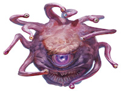
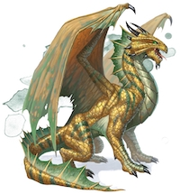
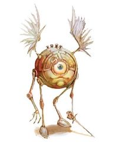

| Name | Size | Alignment | Armor Class | Hit Points | Speed | Features | Actions | ||
|---|---|---|---|---|---|---|---|---|---|
|  | Beholder | large aberration | lawful evil | 18 | 180 | fly 20 ft | Antimagic Cone. The beholder's central eye creates an area of antimagic, as in the antimagic field spell, in a 150-foot cone. At the start of each of its turns, the beholder decides which way the cone faces and whether the cone is active. The area works against the beholder's own eye rays. |
Bite. Eye Rays. The beholder shoots three of the following magical eye rays at random choosing one to three targets it can see within 120 feet of it. 1. Charm Ray. The targeted creature must succeed on a DC 16 Wisdom saving throw or be charmed b the beholder for 1 hour, or until the beholder harms the creature. 2. Fear Ray The targeted creature must succeed on a DC 16 Wisdom saving throw or be frightened for 1 minute. The target can repeat the saving throw at the end of each of its turns, ending the effect on itself on a success. 3. Telekinetic Ray If the target is a creature, it must succeed on a DC 16 Strength saving throw or the beholder moves it up to 30 feetin any direction. It is restrained by the ray's telekinetic grip until the start of the beholder's next turn or until the beholder is incapacitated. If the target is an object weighing 300 pounds or less that isn't being worn or carried, it is moved up to 30 feet in any direction. The beholder can also exert fine control on objects with this ray, such as manipulating a simple tool or opening a door or a container. |
|
|  | Ancient Bronze Dragon | gargantuan dragon | lawful good | 22 (natural armor) | 444 | 40 ft, fly 80 ft, swim 40 ft |
Amphibious. The dragon can breathe air and water. Legendary Resistance (3/day) If the dragon fails a saving throw, it can choose to succeed instead. |
Multiattack. The dragon can use its Frightful Presence. It then makes three attacks: one with its bite and two with its claws. Bite. Melee Weapon Attack: +16 to hit. reach 15 ft., one target. Hit: 20 piercing damage. Claw. Melee Weapon Attack:/em> + 16 to hit, reach 10 ft., one target. Hit: 16 slashing damage. Tail. Melee Weapon Attack: +16 to hit, reach 20 ft., one target. Hit: 18 bludgeoning damage. Frightful Presence. Each creature of the dragon's choice that is within 120 feet of the dragon and aware of it must succeed on a DC 20 Wisdom saving throw or become frightened for 1 minute. A creature can repeat the saving throw at the end of each of its turns, ending the effect on itself on a success. If a creature's saving throw is successful or the effect ends for it, the creature is immune to the dragon's Frightful Presence for the next 24 hours. Breath Weapons (Recharges 5-6). The dragon uses one of the following breath weapons. Lightening Breath. The dragon exhales lightning in a 120-foot line that is 10 feet wide. Each creature in that line must make a DC 23 Dexterity saving throw, taking 88 lightning damage on a failed save, or half as much damage on a successful one. Repulsion Breath. The dragon exhales repulsion energey in a 30-foot cone. EAch creature in that area must succeed on a DC 23 Strength saving throw. On a failed save, the creature is pushed 60 feet away from the dragon. Change Shape. The dragon magically polymorphs into a humanoid or beast that has a challenge rating no higher than its own, or back into its true form. It reverts to its true form if it dies. Any equipment it is wearing or carrying is absorbed or borne by the new form (the dragon's choice). |
|
|  | Monodrone | medium construct | lawful neutral | 15 (natural armor) | 5 | 30 ft., fly 30 ft. |
Axiomatic Mind. The monodrone can't be compelled to act in a manner contrary to its nature or its instructions. Disintegration. If the monodrone dies, its body disintegrates into dust, leaving behind its weapons and anything else it was carrying. |
Dagger. Melee Weapon Attack: +3 to hit, reach 5 ft., one target. Hit: 3 piercing damage. Javelin. Melee Weapon Attack: +3 to hit, reach 5ft. or range 30/120 ft., one target. Hit: 4 piercing damage. |
|